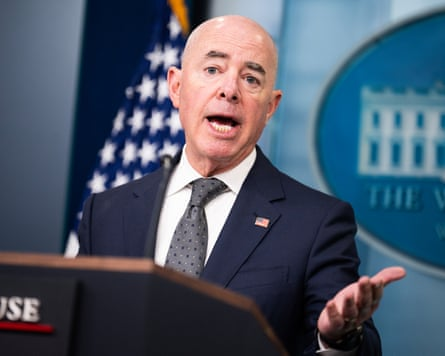
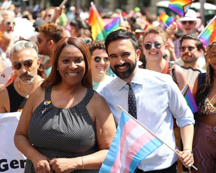

Threats of retribution from Donald Trump are hardly a novelty, but even by his standards, the US president’s warnings of wrathful vengeance in recent days have represented a dramatic escalation.
In the past week, Trump has threatened deportation, loss of US citizenship or arrest against, respectively, the world’s richest person, the prospective future mayor of New York and Joe Biden’s former homeland security secretary.
The head-spinning catalogue of warnings may have been aimed at distracting from the increasing unpopularity, according to opinion surveys, of Trump’s agenda, some analysts say. But they also served as further alarm bells for the state of US democracy five-and-a-half months into a presidency that has seen a relentless assault on constitutional norms, institutions and freedom of speech.
On Tuesday, Trump turned his sights on none other than Elon Musk , the tech billionaire who, before a recent spectacular fallout, had been his closest ally in ramming through a radical agenda of upending and remaking the US government.
But when the Tesla and SpaceX founder vowed to form a new party if Congress passed Trump’s signature “one big beautiful bill” into law, Trump swung into the retribution mode that is now familiar to his Democratic opponents.
“Without subsidies, Elon would probably have to close up shop and head back home to South Africa,” Trump posted on his Truth Social platform , menacing both the billions of dollars in federal subsidies received by Musk’s companies, and – it seemed – his US citizenship, which the entrepreneur received in 2002 but which supporters like Steve Bannon have questioned .
“No more Rocket launches, Satellites, or Electric Car Production, and our Country would save a FORTUNE.”
Trump twisted the knife further the following morning talking to reporters before boarding a flight to Florida.

Elon Musk in the Oval Office of the White House on 30 May 2025, in Washington.Photograph: Evan Vucci/AP
“We might have to put Doge on Elon,” he said, referring to the unofficial “department of government efficiency” that has gutted several government agencies and which Musk spearheaded before stepping back from his ad hoc role in late May. “Doge is the monster that might have to go back and eat Elon. Wouldn’t that be terrible.”
Musk’s many critics may have found sympathy hard to come by given his earlier job-slashing endeavors on Trump’s behalf and the $275m he spent last year in helping to elect him.
But the wider political implications are worrying, say US democracy campaigners.
“Trump is making clear that if he can do that to the world’s richest man, he could certainly do it to you,” said Ian Bassin, co-founder and executive director of Protect Democracy. “It’s important, if we believe in the rule of law, that we believe in it whether it is being weaponized against someone that we have sympathy for or someone that we have lost sympathy for.”
Musk was not the only target of Trump’s capricious vengeance.
He also threatened to investigate the US citizenship of Zohran Mamdani , the Democrats’ prospective candidate for mayor of New York who triumphed in a multicandidate primary election, and publicly called on officials to explore the possibility of arresting Alejandro Mayorkas, the former head of homeland security in the Biden administration.
Both scenarios were raised during a highly stage-managed visit to “Alligator Alcatraz”, a forbidding new facility built to house undocumented people rounded up as part of Trump’s flagship mass-deportation policy.
After gleefully conjuring images of imprisoned immigrants being forced to flee from alligators and snakes presumed to reside in the neighbouring marshlands, Trump seized on obliging questions from friendly journalists working for rightwing fringe outlets that have been accredited by the administration for White House news events, often at the expense of established media.
“Why hasn’t he been arrested yet?” asked Julio Rosas from Blaze Media, referring to Mayorkas, who was widely vilified – and subsequently impeached – by Republicans who blamed him for a record number of immigrant crossings at the southern US border.
“Was he given a pardon, Mayorkas?” Trump replied. On being told no, he continued: “I’ll take a look at that one because what he did is beyond incompetence … Somebody told Mayorkas to do that and he followed orders, but that doesn’t necessarily hold him harmless.”
Asked by Benny Johnson, a rightwing social media influencer, for his message to “communist” Mamdani – a self-proclaimed democratic socialist – over his pledge not to cooperate with Immigration and Customs Enforcement (Ice) roundups of undocumented people if he is elected mayor, Trump said: “Then we will have to arrest him. We don’t need a communist in this country. I’m going to be watching over him very carefully on behalf of the nation.”
He also falsely suggested that Mamdani, 33 – who became a naturalized US citizen in 2018 after emigrating from Uganda with his ethnic Indian parents when he was a child – was in the country “illegally”, an assertion stemming from a demand by a Republican representative for a justice department investigation into his citizenship application. The representative, Andy Ogles of Tennessee, alleged that Mamdani, who has vocally campaigned for Palestinian rights, gained it through “willful misrepresentation or concealment of material support for terrorism”.
Alejandro Mayorkas, then the Department of Homeland Security secretary, at the White House daily press briefing on 1 October 2024.Photograph: Tom Williams/CQ-Roll Call, Inc/Getty Images
The threat to Mamdani echoed a threat Trump’s border “czar” Tom Homan made to arrest Gavin Newsom, the California governor, last month amid a row over Trump’s deployment of national guard forces in Los Angeles to confront demonstrators protesting against Ice’s arrests of immigrants.
Omar Noureldin, senior vice-president with Common Cause, a pro-democracy watchdog, said the animus against Mamdani, who is Muslim, was partly fueled by Islamophobia and racism.
“Part of the rhetoric we’ve heard around Mamdani, whether from the president or other political leaders, goes toward his religion, his national origin, race, ethnicity,” he said.
“Mamdani has called himself a democratic socialist. There are others, including Bernie Sanders, who call themselves that, but folks aren’t questioning whether or not Bernie Sanders should be a citizen.”
Retribution promised to be a theme of Trump’s second presidency even before he returned to the Oval Office in January. On the campaign trail last year, he branded some political opponents – including Adam Schiff, a California Democrat, and Nancy Pelosi, the former speaker of the House of Representatives – as “the enemy within”.
Since his inauguration in January, he has made petty acts of revenge against both Democrats and Republicans who have crossed him. Biden; Kamala Harris, the former vice-president and last year’s defeated Democratic presidential nominee; and Hillary Clinton, Trump’s 2016 opponent, have all had their security clearances revoked.
Secret Service protection details have been removed from Mike Pompeo and John Bolton, who served in Trump’s first administration, despite both being the subject of death threats from Iran because of the 2020 assassination of Qassem Suleimani, a senior Revolutionary Guards commander.
Similar fates have befallen Anthony Fauci, the infectious diseases specialist who angered Trump over his handling of the coronavirus pandemic, as well as Biden’s adult children, Hunter and Ashley.
Trump has also targeted law firms whose lawyers previously acted against him, prompting some to strike deals that will see them perform pro bono services for the administration.
Zohran Mamdani (left) and Letitia James, New York’s attorney general, at the Pride march in New York City on 29 June 2025.Photograph: Kyle Stevens/Shutterstock
For now, widely anticipated acts of retribution against figures like Gen Mark Milley, the former chair of the joint chiefs of staff of the armed forces – whom Trump previously suggested deserved to be executed for “treason” and who expressed fears of being recalled to active duty and then court-martialed – have not materialised.
“I [and] people in my world expected that Trump would come up with investigations of any number of people, whether they were involved in the Russia investigation way back when, or the election investigation, or the January 6 insurrection, but by and large he hasn’t done that,” said one veteran Washington insider, who requested anonymity, citing his proximity to people previously identified as potential Trump targets.
“There are all kinds of lists floating around … with names of people that might be under investigation, but you’ll never know you’re under investigation until police turn up on your doorstep – and these people are just getting on with their lives.”
Yet pro-democracy campaigners say Trump’s latest threats should be taken seriously – especially after several recent detentions of several elected Democratic officials at protests near immigration jails or courts. In the most notorious episode, Alex Padilla, a senator from California, was forced to the floor and handcuffed after trying to question Kristi Noem, the homeland security secretary, at a press conference.
“When the president of the United States, the most powerful person in the world, threatens to arrest you, that’s as serious as it gets,” said Bassin, a former White House counsel in Barack Obama’s administration.
“Whether the DoJ [Department of Justice] opens an investigation or seeks an indictment, either tomorrow, next year or never is beside the point. The threat itself is the attack on our freedoms, because it’s designed to make us all fear that if any one of us opposes or even just criticises the president, we risk being prosecuted.”
While some doubt the legal basis of Trump’s threats to Musk, Mayorkas and Mamdani, Noureldin cautioned that they should be taken literally.
“Trump is verbose and grandiose, but I think he also backs up his promises with action,” he said. “When the president of the United States says something, we have to take it as serious and literal. I wouldn’t be surprised if at the justice department, there is a group of folks who are trying to figure out a way to [open prosecutions].”
But the bigger danger was to the time-honored American notion of freedom, Bassin warned.
“One definition of freedom is that you are able to speak your mind, associate with who you want, lead the life that you choose to lead, and that so long as you conduct yourself in accordance with the law, the government will not retaliate against you or punish you for doing those things,” he said. “When the president of the United States makes clear that actually that is not the case, that if you say things he doesn’t like, you will be singled out, and the full force of the state could be brought down on your head, then you’re no longer free.
“And if he’s making clear that that’s true for people who have the resources of Elon Musk or the political capital of a Mayorkas or a Mamdani, imagine what it means for people who lack those positions or resources.”